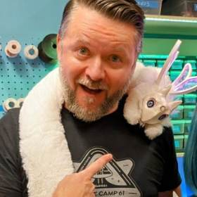
Zack Weaver
Director, BTU Lab & Assistant Teaching Professor, ATLAS
- General tools
- Wood shop
- Sewing & textiles
- Electronics
- Lasers
- 3D printing
- Shaper CNC
- Way, way more
THE BTU LAB
Make your mischief! Use this directory to contact BTU staff about your interests or questions. Each person lists what they can help you with. Reach out, we love to help.
Want to join the team? Email Zack Weaver if you're interested in sharing your skills with the community.

Director, BTU Lab & Assistant Teaching Professor, ATLAS
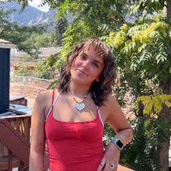
Undergraduate, ATLAS
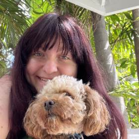
Undergraduate, ATLAS — Head 3D Printing Wizard
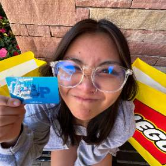
Undergraduate, ATLAS
Undergraduate, ENVD
Undergraduate, ATLAS — President, CU3D
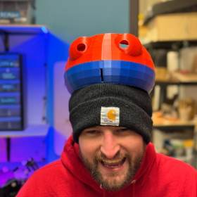
Undergraduate, ATLAS
sage.morgan-larosa@colorado.edu
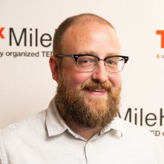
Director, Whaaat!? Lab & Assistant Teaching Professor, ATLAS
Undergraduate, ATLAS
Undergraduate, ATLAS
thatcher.bonniwell@colorado.edu
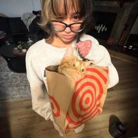
Undergraduate, ATLAS
Yunessa.Rodriguez@colorado.edu
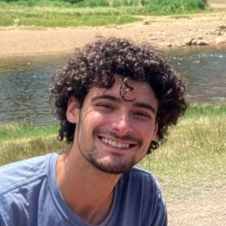
Undergraduate, ATLAS
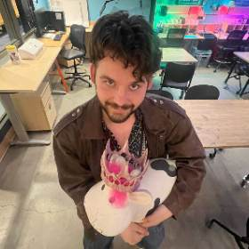
Undergraduate, ATLAS
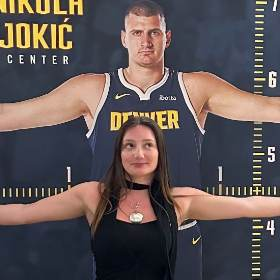
Undergraduate, ATLAS
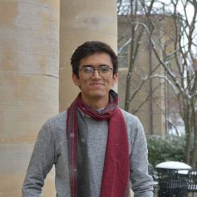
PhD Student, ATLAS
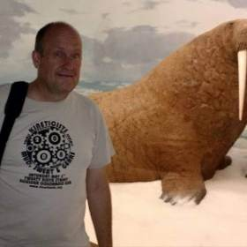
Graduate Student, ATLAS
Undergraduate, ATLAS (Graduated)
Graduate Student, ATLAS
arjun.ramachandran@colorado.edu
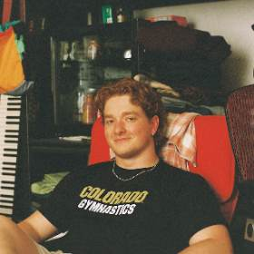
Undergraduate, ATLAS (Graduated)
bartholomew.baker@colorado.edu
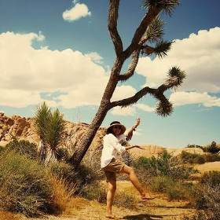
PhD Student, ATLAS
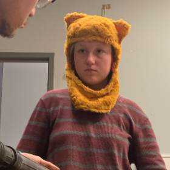
Undergraduate, ATLAS (Graduated)
Undergraduate, ATLAS (Graduated)
Undergraduate, ATLAS (Graduated)
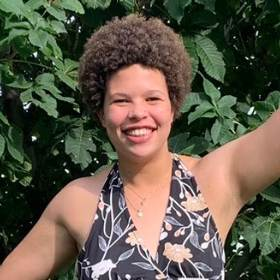
Undergraduate, ATLAS (Graduated)
Undergraduate, ATLAS (Graduated)
nefeli.hadjiyiannis@colorado.edu
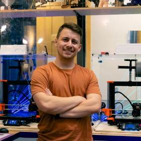
Undergraduate, CU3D President (Graduated)
Undergraduate, ATLAS
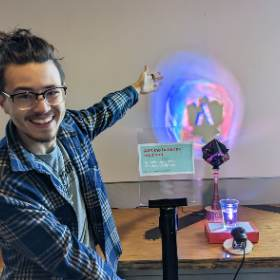
Graduate Student, ATLAS
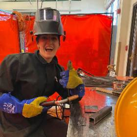
Undergraduate, ENVD
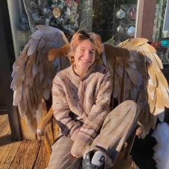
Undergraduate, ATLAS
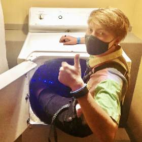
Undergraduate (image approximate)
jeremiah.klinkerman@colorado.edu
Graduate Student, ATLAS
Hunter.allenbonney@colorado.edu
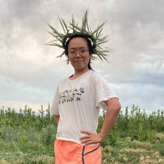
PhD Student, ATLAS
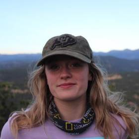
Undergraduate, ATLAS (Graduated)
CTD Undergraduate, ATLAS (Graduated)
Graduate Student, ATLAS (Graduated)
Graduate Student, ATLAS (Graduated)